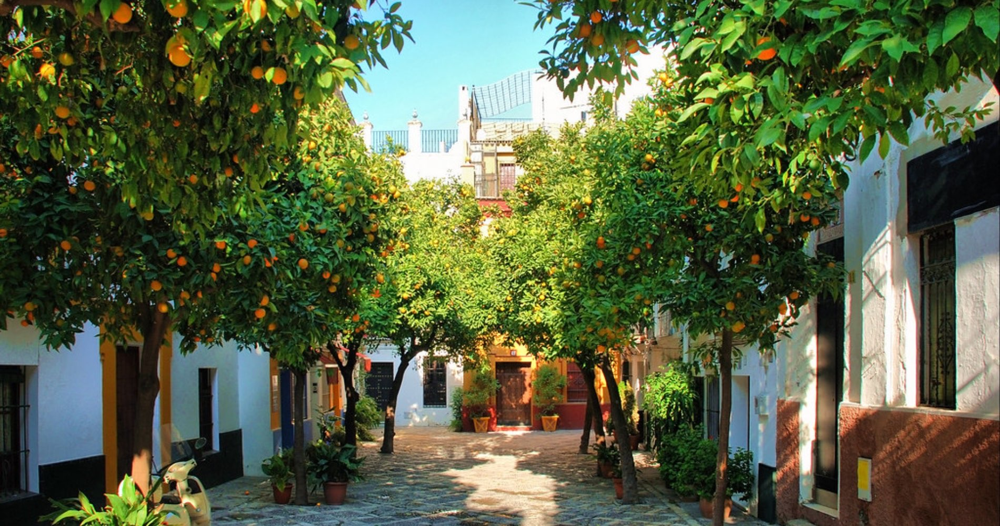

Who you will Meet
About Us
Read about the person behind Flavors of Andalucia, how we work and what drives our passion.

Licensed Authorised Guides
I guide in English and Norwegian, and can also guide in Swedish and Danish. Through my partner guides we cover French, German, Italian, Portuguese, Spanish and Polish — all licensed and chosen personally.
Who you will Meet
Gunvor Guttormsen
I’m Gunvor Guttormsen, a Norwegian-born enthusiastic traveler, storyteller, and passionate guide who has called Seville home for over 30 years. My love for Spain started long before I settled here—I’ve lived in several different locations across the country, each one deepening my connection to its culture, history, and way of life.
For as long as I can remember, I’ve been drawn to languages, cultures, and the joy of discovering new places. Working in the travel industry my entire life, I’ve had the privilege of helping people experience Spain beyond the surface—not just as tourists, but as true explorers.
Although Seville is my home, Andalucía continues to surprise me with its endless beauty, traditions, and hidden gems. As a fully licensed official guide, I don’t just organize tours—I create immersive experiences that bring you closer to the soul of this incredible region. Whether it’s uncovering the history behind ancient palaces, wandering through charming white villages, or indulging in the rich flavors of Andalusian cuisine, my goal is to make each journey unforgettable, authentic, and deeply personal.
My Norwegian roots makes me even more inventive and creative in the way I plan my tours. That’s why every experience I offer is designed with passion, care, and a personal touch—whether you’re here for an intimate cultural escape, a corporate retreat, or a tailor-made adventure.
Experience Andalucía Like Never Before
You want more than just a trip—you want unforgettable memories, a journey that excites, inspires, and brings you closer to the heart of Andalucía.
You’re not here to simply check off landmarks—you want to immerse yourself in the vibrant culture, rich history, and exquisite flavors of this stunning region.
Whether your passion lies in history, architecture, local traditions, or discovering the secrets of the perfect tapa, we’ve got you covered. From a single day tour to a fully customized journey, we’re here to guide you every step of the way.
Let yourself be captivated by the sights, sounds, and scents of Andalucía—a region that straddles Europe and Africa, shaped by the legacies of the Roman, Muslim, and Christian empires. In a place so rich with history and cultural depth, having a local friend and expert guide makes all the difference.
We’ll take you beyond the tourist tracks, sharing the hidden corners and untold stories that make Andalucía so special. Wander through its enchanting streets, savor local delicacies in our favorite authentic restaurants, and dive into both ancient traditions and modern-day life. Whether you’re curious about today’s Andalucía, fascinated by its past, or looking for a mix of both—we’ll tailor your journey just for you.
With us, you’re not just booking a tour—you’re gaining a knowledgeable, experienced, and friendly companion who will make your time in Andalucía truly exceptional.
Let’s explore together!

At Flavors of Andalucía, it’s not just about visiting a destination; it’s about feeling its rhythm, tasting its flavors, and experiencing its magic in a way that stays with you long after you leave. I, along with the wonderful people I collaborate with, am here to make that happen for you.
I look forward to welcoming you and sharing the true spirit of Andalucía with you!
Good to know
Questions guests ask before they book
Who will guide me in Seville?
Gunvor Guttormsen, the founder of Flavors of Andalucia. She is Norwegian-born, has lived in Seville for over 30 years and works as a fully licensed official guide in Seville and Andalucía.
Which languages are the tours in?
English, Spanish, French, German, Italian, Norwegian, Swedish and Danish, with licensed authorised guides.
Are your guides officially licensed?
Yes. Every guide is an officially licensed and authorised guide, which also gives access to monuments and sites that unlicensed tours cannot enter.
Can you plan a whole trip, not just one tour?
Yes. From a single day tour to a fully customized journey, we plan and operate the whole programme, including transport, restaurants, guides and accommodation.
Where do you operate?
Seville and all of Andalucía, including Cádiz, Jerez, Huelva, Ronda, Granada and Córdoba, and food and wine regions elsewhere in Spain.
How do I get in touch?
Write to hello@flavorsofandalucia.com, call or WhatsApp +34 637 87 87 68, or send an enquiry from the contact page.